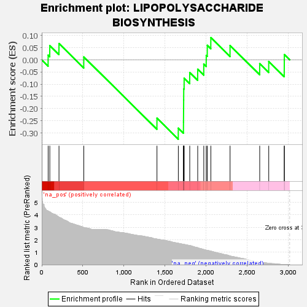
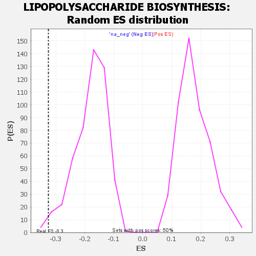

| | | Dataset | GSEA RNK clr Maaslin2 MucosalvsLuminal KO - Cecum.rnk |
| Phenotype | NoPhenotypeAvailable |
| Upregulated in class | na_neg |
| GeneSet | LIPOPOLYSACCHARIDE BIOSYNTHESIS |
| Enrichment Score (ES) | -0.32576263 |
| Normalized Enrichment Score (NES) | -1.823588 |
| Nominal p-value | 0.010080645 |
| FDR q-value | 0.05130814 |
| FWER p-Value | 0.531 |
Table: GSEA Results Summary

Fig 1: Enrichment plot: LIPOPOLYSACCHARIDE BIOSYNTHESIS
Profile of the Running ES Score & Positions of GeneSet Members on the Rank Ordered List

Fig 2: LIPOPOLYSACCHARIDE BIOSYNTHESIS: Random ES distribution
Gene set null distribution of ES for LIPOPOLYSACCHARIDE BIOSYNTHESIS